Hardware prototype and debug¶
After ordering the Lime board and finding a Nokia LCD5110 in my shack it was time to prototype and learn about the board itself.
I played with the components to see how they would fit
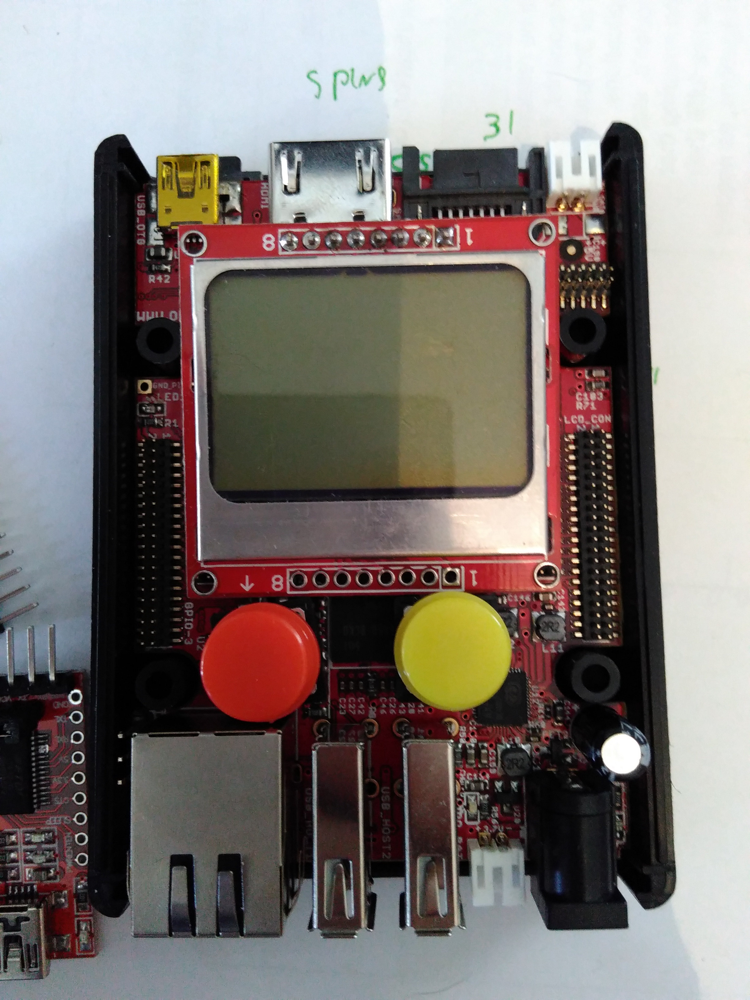The first problem I had was that the pin headers of the Lime board are quite small and I did not have the possiblity to attach anything to the board. I had to wait and order the A10-LIME-UEXT adapter and cable
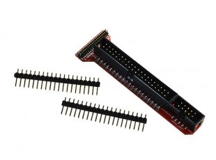UEXT connector¶
Olimex defined a very simple connector that can be used to attach many different devices and created a spec for it. The connector has support for SPI/I2C/UART and POWER.
Schematics¶
While I did not indend to use the physical connetor it made my job easy for the LCD connector because if was able to just copy the MOD-LCD3310-schematics the device should work fine. it halso helped me choose witch of the 160 GPIO’s to use.
This is the schematics of the MOD-LCD3310 UEXT module
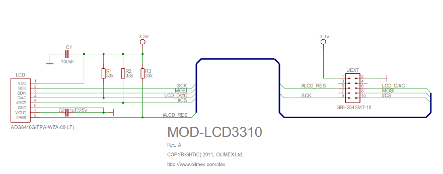This schematics however does not match what I typically found on other websites like this one for example:
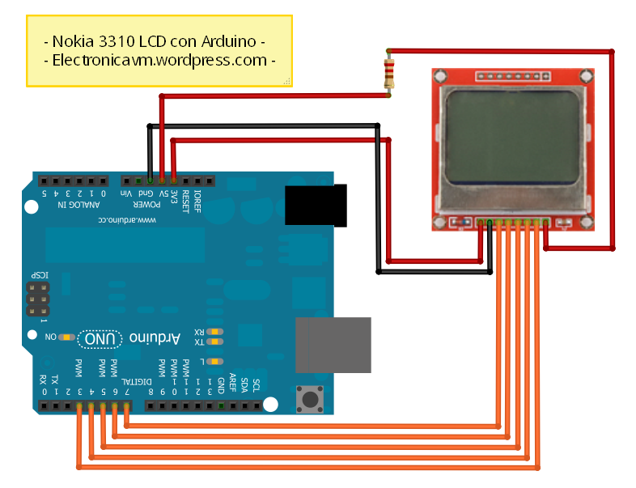This is (probably becasue) the UEXT module defines that “The I 2 C signals (SDA and SCL) of host’s UEXT are pulled-up with resistors” in it’s UEXT manual
The LIME board indeed has this same behaviour
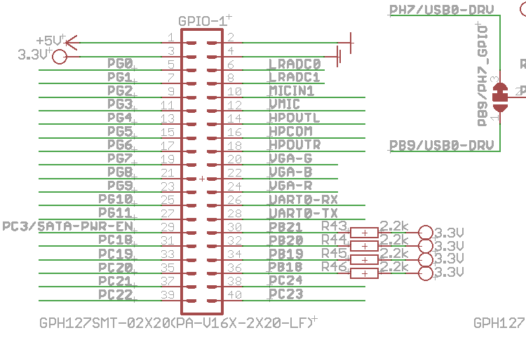Using the Lime schematics, the schematics of the Lime A10-LIME-UEXT and the schematics of the LCD3310 board I was able to draw “DaveCAD” style how I wanted the connection to be and I was albe to start prototyping the PCB
In the table bellow shows how I (in the end) ended up connecting the wires to the GPIO1 connector of the UEXT module. It is lacking a few pullup’s as we will see later.
| GROUP | FUNCTION | PIN | GPIO1 NAME | GPIO 1 PIN | SoC GPIO function |
|---|---|---|---|---|---|
| LCD | RST | 1 | PB20 | 32 | |
| LCD | CE | 2 | GND | ||
| LCD | DC | 3 | PB21 | 30 | |
| LCD | DIN | 4 | MOSI (SPI II) | 37 | |
| LCD | CLK | 5 | CLK (SPI II) | 35 | |
| LCD | VCC | 6 | 3.3v | 3 | |
| LCD | LIGHT | 7 | GP10 | 25 | 202 |
| LCD | GND | 8 | GND | 2 | |
| SW | SW1 | 1 | PG7 | 19 | 199 |
| SW | SW2 | 1 | PG8 | 21 | 200 |
| SW | SW3 | 1 | PG9 | 23 | 201 |
The proto PCB¶
I started by testing how the components should fit also was drawing schematics to attach the hardware. I was lacking the connector at that time and was playing with the idea to directly solder the wires to the pin header of the GPIO port. This was supposed to be a quick and easy side project and I wanted to deliver something working by the end of the week-end.
Fitting the components
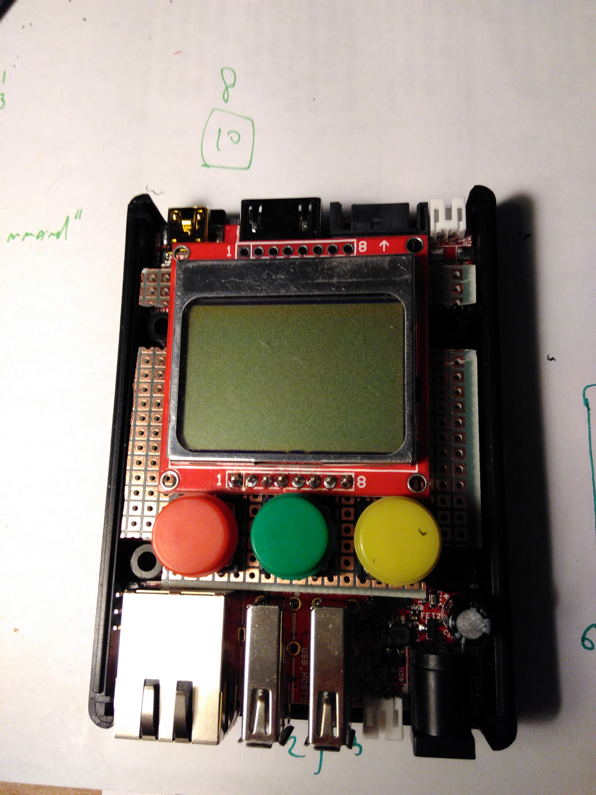After cuting and placing the components I started wireing the PBC and I ended up with something like this
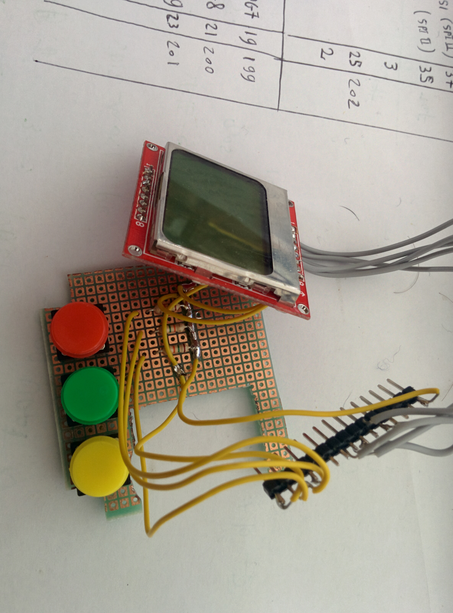Case design¶
This prototype was done in a week-end
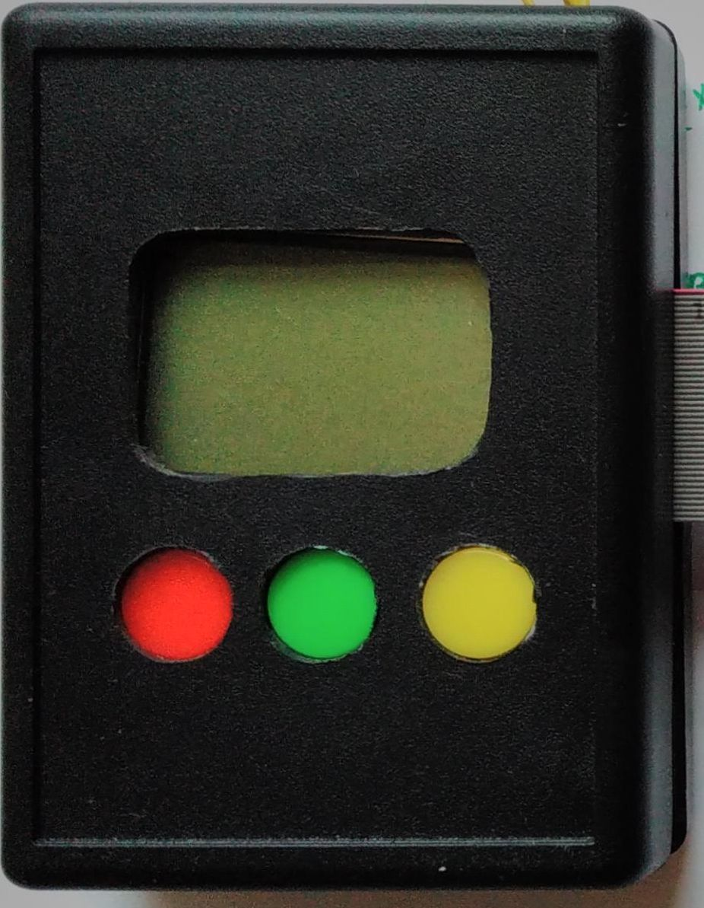LCD bringup¶
Olimex has a great github repository where you can find all the schematics and sample source code for many devices and modules.
Once the Lime cable arrived I was time to prototype do the hardware brindup and see if my plan worked.
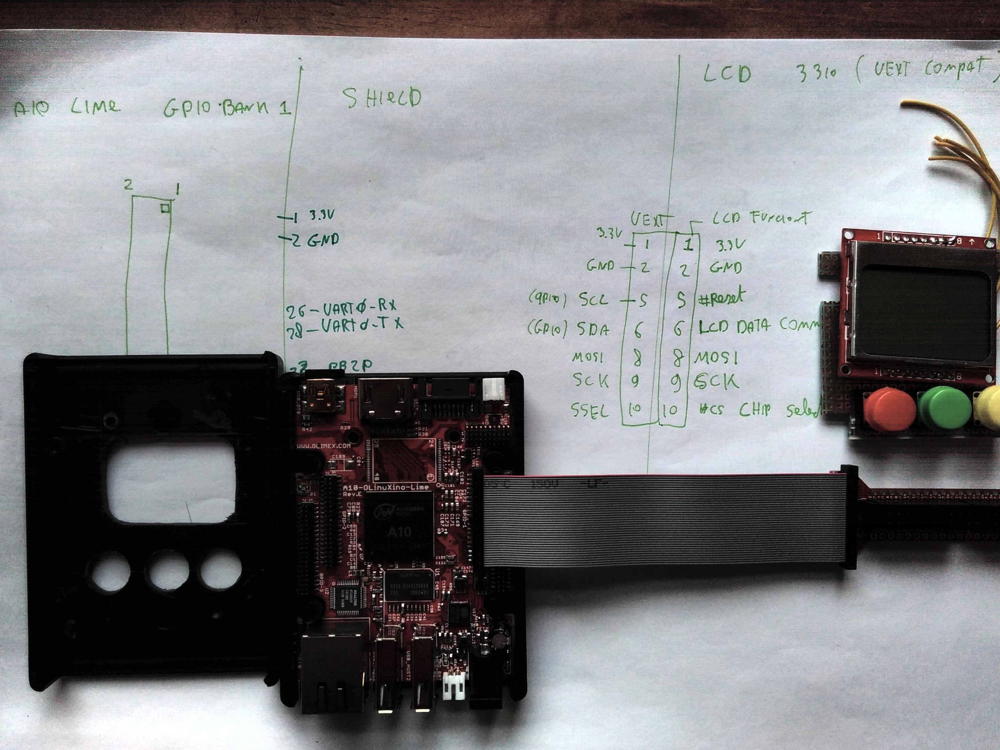My work started by searching for sample code to talk to the LCD module and I was lucky finding the A20 MOD-LCD3310 sample code this code depends on SPIDEV being present (see how I enabled this in Software install.)
The first thing to test was the power. I attached a multimeter to the gnd/3.3V pin and saw it was 3.3.v
The second thing was to test the backlight (not really but it sounds cool):
root@flasher:/sys/class/gpio# cd /sys/class/gpio/
root@flasher:/sys/class/gpio# echo 202 > export
root@flasher:/sys/class/gpio# cd gpio202
root@flasher:/sys/class/gpio/gpio202# echo out > direction
root@flasher:/sys/class/gpio/gpio202# echo 1 > value
What really happend is that I compiled the A20 MOD-LCD3310 sample code on the LIME and that things where not working. I did a few things. First I went to my hackerspace to look at the signals using an oscilloscope. Using that I was able to determine that all signals where doing mostly what I expected from them(e.g. SPI clock and data doing thing at the right time, the chip select working). The device however wat not showing any sign of life. The clock signal however did not look good (e.g. not sharp)
To validate the screen was indeed also working on 3.3v (I only tested it on a 5v arduino) I plugged the display on a 3.3v arduino and ran some sample code to use the display:
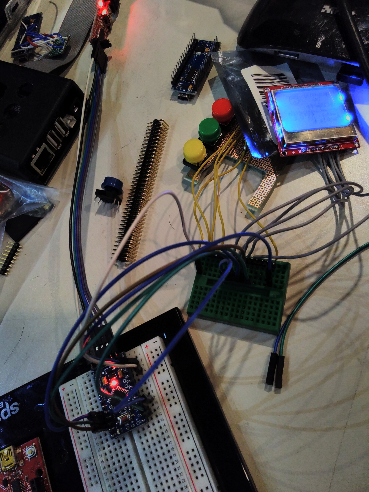Next I hoocked up my saleae logic analyzer to the display and started comparing the working sample and the sample using the Lime board.
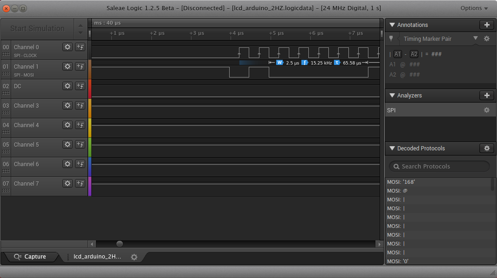I soon discovered that the A20 MOD-LCD3310 sample code was using the wrong SPI mode (namely 3 instead of 0). After fixing this I started seeing thing on the display
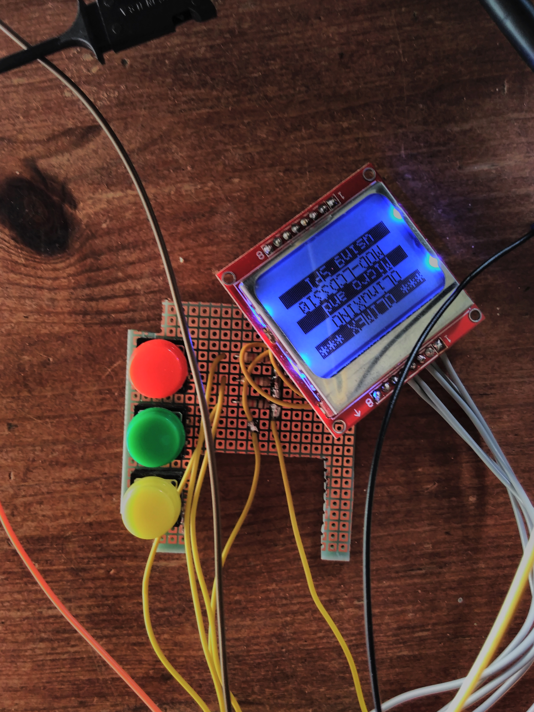The screen however did still have some problems. For example the screen data slowly was getting corrupted
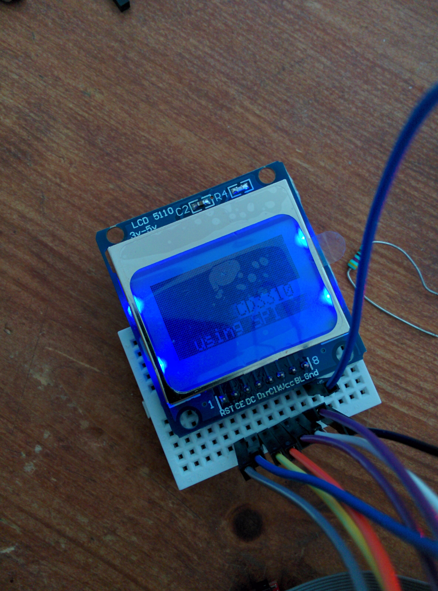This problem I still need to debug but while trying to debug the problem I found that the problem did not appear while the logic analyser was plugged in. For now I “discovered” that adding a pulldown from SCK to GND mostly solves the problem. Is this a drive strenght issue or something else I don’t know. I for now move on to the next part of the project. While I would like to get a 100% working prototype I can either add non populated resistors or patch the boards when ready.
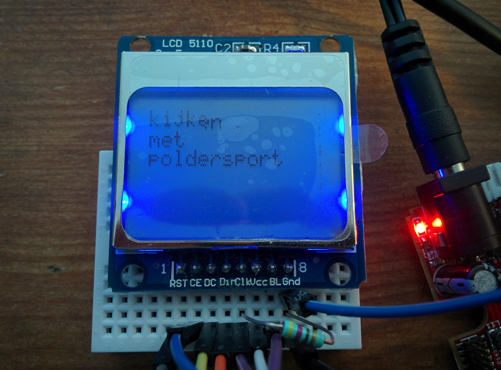Button bringup¶
After determining the possible GPIO canditates to use for the GPIO buttons I played around witht the GPIO library that is also found in the A20 sample code. The buttons worked right away.
modified main.c from the LCD project:
#include "LCD3310.h"
#include <stdio.h>
#include <unistd.h>
#include "gpio_lib.h"
#define BUT_A SUNXI_GPG(7)
#define BUT_B SUNXI_GPG(8)
#define BUT_C SUNXI_GPG(9)
void setup_gpio(){
sunxi_gpio_set_cfgpin( BUT_A, SUNXI_GPIO_INPUT);
sunxi_gpio_set_cfgpin( BUT_B, SUNXI_GPIO_INPUT);
sunxi_gpio_set_cfgpin( BUT_C, SUNXI_GPIO_INPUT);
};
int main ()
{
setup_gpio();
printf("GPIO number %i, %i and %i",BUT_A,BUT_B,BUT_C);
int a , b , c;
int counter=0;
int last_sum,sum;
char data[80];
char data2[80];
LCDInit();
//LCDContrast(0x70);
while(1 == 1){
a = sunxi_gpio_input(BUT_A);
b = sunxi_gpio_input(BUT_B);
c = sunxi_gpio_input(BUT_C);
sum = 1 * a + 2 * b + 3 * c;
if (sum != last_sum){
counter++;
snprintf(data,40,"a=%i,b=%i,c=%i",a,b,c);
snprintf(data2,40,"%i ",counter);
printf("%s\n",data);
LCDStr(0, (unsigned char *)"*** OLIMEX ***", 1);
LCDStr(1, (unsigned char *)" OLinuXINO ", 0);
LCDStr(2, data2,0);
LCDStr(3, (unsigned char *)" MOD-LCD3310 ", 0);
LCDStr(4, data,0);
}
last_sum = sum;
usleep(10);
};
}
Functional prototype¶
The result is a prototype that is functional